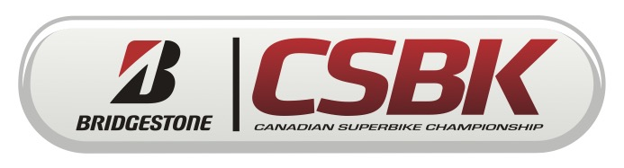

대표 로고대표 브랜드 마크
대표 로고대표 브랜드 마크브리지스톤 Bridgestone
브리지스톤(Bridgestone)은 1931년 이시바시 쇼지로가 일본에서 창업한 타이어·고무 제품 제조기업으로, 사명은 창업자 성씨 '이시바시(돌다리)'를 영어로 옮긴 데서 유래한다. 1988년 미국 파이어스톤을 인수했다.
최종 업데이트
브리지스톤은 어떤 브랜드인가
브리지스톤(Bridgestone)은 1931년 3월 이시바시 쇼지로(石橋正二郎)가 일본에서 창업한 타이어·고무 제품 제조기업으로, 본사는 도쿄 교바시에 있다. 사명은 창업자 성씨인 '이시바시(石橋)', 즉 '돌다리(stone bridge)'를 영어로 직역한 뒤 어순을 뒤집은 데서 유래한다.
1988년 미국 오하이오주 애크런의 파이어스톤(Firestone)을 인수하며 글로벌 타이어 기업으로 도약했다.
브리지스톤은 어떻게 봐야 할까
브리지스톤은 1931년 일본 구루메의 다비(작업용 양말) 사업에서 출발해 고무 가공 노하우를 타이어로 확장했고, 1988년 미국 파이어스톤을 인수하며 단숨에 세계 최상위권 타이어 기업으로 올라섰다. 2024년 매출은 약 289억달러(40조원대) 규모이며, 세계 시장 점유율 12.5%로 14.8%의 미쉐린에 이은 2위 자리를 지킨다.
핵심 경쟁력은 트럭·버스용 상용 타이어와 광산용 초대형 타이어, 항공기 타이어 같은 고마진 산업 영역에서의 강세로, 일반 승용 타이어 가격 경쟁에 치우친 후발 업체와 차별화된다. 한국 시장에서는 미쉐린·콘티넨탈·피렐리와 함께 수입 프리미엄 1군으로 분류되며, 한국타이어·금호·넥센 같은 국산 가성비 브랜드와 가격대가 뚜렷이 구분되는 고급 포지션을 유지한다.
모터스포츠에서는 1997년부터 2010년까지 F1 타이어를, 2009년부터 2015년까지 모토GP 단독 타이어를 공급하며 기술력을 입증했다.
브리지스톤은 어떻게 시작되고 성장했나
이시바시 쇼지로가 1931년에 설립한 일본의 타이어 제조 회사로 자동차, 오토바이, 항공 타이어를 비롯하여 골프용품, 자전거 등을 제조 · 판매함.
브리지스톤의 브랜드 아이덴티티는 무엇인가
브랜드명은 창업자 성씨 '이시바시'(돌다리)의 'Stone Bridge'를 어순 전치해 'Bridgestone'으로 만든 것이다. 워드마크는 1984년 PAOS가 재설계했으며, 이전의 검은 삼각형을 제거하되 그 형태를 'B'자 하단에 함축적으로 통합했고, 'B' 상단의 붉은색이 삼각형을 형성하며 모노크롬 마크에 강조점을 더한다.
'Bridgestone Red'는 창업 이래의 전통색을 공식화한 것으로 혁신·신뢰·열정을 상징한다. 정확한 색상 값과 서체명은 공개 자료로 확인되지 않는다.
브리지스톤의 대표 제품과 서비스는 무엇인가
승용·SUV용 핵심 라인업으로 고성능 포텐자(Potenza), 정숙성을 앞세운 투란자(Turanza), SUV 전용 듀얼러(Dueler), 빙설로 표준으로 꼽히는 겨울용 블리작(Blizzak), 저연비 에코피아(Ecopia), 펑크 후에도 주행이 가능한 드라이브가드(DriveGuard)를 운영한다. 1988년 인수한 파이어스톤(Firestone)을 가치형 보급 브랜드로, 브리지스톤을 프리미엄 브랜드로 배치하는 이원 전략을 쓴다.
타이어 외에도 트럭·버스용 상용 타이어, 광산·건설 차량용 초대형 타이어, 항공기 타이어, 컨베이어벨트·면진고무 같은 다각화된 산업용 고무 사업을 함께 영위한다.
브리지스톤은 지금 어떤 상태인가
브리지스톤은 2011년 로고·마크 체계를 정비하고 슬로건을 'Your Journey, Our Passion'으로 개정했다. 모터스포츠에서는 1997~2010년 F1 타이어를 공급했고, 2009~2015년 MotoGP 단독 타이어 공급사를 맡았다.
브리지스톤 로고는 어떻게 변해왔나
대표 로고대표 브랜드 마크 BI/CI 아카이브보관 이미지 2
BI/CI 아카이브보관 이미지 2
BI/CI 아카이브 6보관 이미지 6자주 묻는 질문
브리지스톤는 어느 나라 브랜드인가요?
브리지스톤는 일본의 모빌리티 브랜드입니다.
브리지스톤는 언제 설립되었나요?
브리지스톤는 1931년 설립되었습니다.
브리지스톤의 브랜드 아이덴티티는 무엇인가요?
브랜드명은 창업자 성씨 '이시바시'(돌다리)의 'Stone Bridge'를 어순 전치해 'Bridgestone'으로 만든 것이다.
브리지스톤의 대표 제품은 무엇인가요?
승용·SUV용 핵심 라인업으로 고성능 포텐자(Potenza), 정숙성을 앞세운 투란자(Turanza), SUV 전용 듀얼러(Dueler), 빙설로 표준으로 꼽히는 겨울용 블리작(Blizzak), 저연비 에코피아(Ecopia), 펑크 후에도 주행이 가능한 드라이브가드(DriveGuard)를 운영한다.
브리지스톤는 현재 어떤 상태인가요?
브리지스톤은 2011년 로고·마크 체계를 정비하고 슬로건을 'Your Journey, Our Passion'으로 개정했다.
출처와 검증
브랜드명은 한글과 원어를 함께 표기하되 데이터에 없는 표기는 만들지 않습니다. 기원 국가·설립연도는 검수된 정의문에서 확인된 값을 우선하고, 없을 때만 공식 웹사이트 URL이 일치하는 위키데이터 개체의 값을 씁니다.